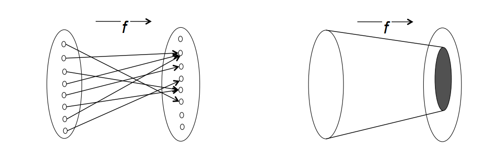

De Morgan's Law - (A intesection B)' == A' union B'
Ordered Pairs - Same as row (with 2 columns) in DB
The Carteisan Product of two sets A and B is the set of all posssible ordered pairs, where the first element comes from A and the second element comes from B.
The projection of B onto A is the subset of elements of A, that appear (in the right position) in one of the tuples of B.
select Director from table_name;
/* In this query, Director is the project(ion) */
Think of a function as a machine, you feed it an input, it does some work and spits out an output. Functions are the same.
Functions in computer science are the same as functions in maths (E.G. sin(x), cos(x*2), tan(x-3), etc etc)
A function f from A to B specifies for each element of A exactly one element of B.
If f : A → B, then A is the domain, and B is the codomain.
Given N people, introduce everyone to n amount of people
Amount of steps in this problem is 2**n
Travelling salesmen problem
AKA 12 pubs of XMAS graphed
2**n steps
Problems that you can check in polynomial time, but not solve in polynomial time, then its an NP problem
If P = NP, every NP problem can become a P problem (P being Polymonial, NP being Non-Polynomial
From Functions I, given the text of an email, a function "encrypt" returns an encrypted version of the text.
REMINDER
Let A and B be two non-empty sets. A function f from A to B specifies for each element of A exactly one element of B. We write f : A → B, and if f specifies b for a, we write f(a)=b, or f : A → B : a |→ b
Consider a function f:A→B If f(a) = b, then b is the image of a under f. The range of f is the subset of B to which elements of A are mapped.
